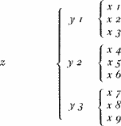
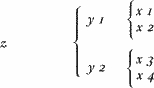

A Glimpse into the
Work of Herbert Quain
When Herbert Quain died recently, at his home in Roscommon, it came as no surprise to me that The Times Literary Supplement granted him a bare half column of pious valediction, none of whose complimentary adjectives went unmodified—and considerably tempered—by an adverb. The Spectator, in its relevant issue, was undeniably less brief and perhaps kinder. However, to liken The God of the Labyrinth, Quain’s first book, to Mrs. Agatha Christie and other of his writings to Gertrude Stein are not comparisons that inevitably spring to mind, nor would the late author have been cheered by them. Quain never considered himself a genius, not even on those peripatetic nights of literary discussion when, having by then exhausted the printing presses, he played at being Monsieur Teste or Dr Samuel Johnson. Herbert Quain was fully aware of the experimental nature of his books, which were admirable perhaps for their novelty and for a certain blunt honesty but not for the power of their passion. “As with Cowley’s odes,” he wrote to me from Longford on the sixth of March, 1939, “I belong not to art but to the mere history of art.” To him there was no lower discipline than history.
I stress Herbert Quain’s modesty—a modesty that is not, of course, the sum total of his thought. Flaubert and Henry James have led us to believe that works of art are rare and painstakingly created, but the sixteenth century (let us recall Cervantes’s Voyage to Parnassus, let us recall Shakespeare’s career) did not share this dismal view. Nor did Herbert Quain. In his opinion, good writing was not uncommon; he held that almost any street talk reached similar heights. He also felt that the aesthetic act demanded an element of surprise and that it was difficult to be surprised by something remembered. Smiling sincerely, he would deplore “the stubborn, slavish preservation” of books from the past. I do not know whether his woolly theory can be justified, but I know his books are too eager to surprise.
I regret that I lent a certain lady—irrecoverably—the first thing he wrote. This I have said was a detective novel called The God of the Labyrinth; I can add that it was published towards the end of November, 1933. By early December, the pleasing but laboured convolutions of Ellery Queen’s Siamese Twin Mystery had London and New York engrossed; I would suggest that the failure of our friend’s novel should be blamed on this disastrous coincidence. Also— and I want to be absolutely honest—on the book’s flawed construction and on a number of stiff, pretentious passages that describe the sea. Seven years on, I find it impossible to recollect the details of the plot. Here, then, is its outline, now impoverished (or purified) by my dim memory. There is a puzzling murder in the opening pages, plodding conversation in the middle, and a solution at the end. Once the mystery is solved, we come upon a long paragraph of retrospection containing this sentence: “Everyone thought that the meeting between the two chess players had been accidental.” The words lead us to believe that the solution is wrong. The anxious reader, going back over the relevant chapters, discovers a different solution, the true one. In so doing, the reader of this curious book turns out to be cleverer than the detective.
Still more unconventional is Quain’s “retrogressive, branching novel” April March, whose third (and only) part appeared in 1936. Nobody on studying the book could fail to see that it is a game. Allow me to recall that the author never regarded it as anything else. “I claim for this work,” I once heard him say, “the essential features of all games—symmetry, arbitrary rules, and tedium.” Even the title is a feeble pun. It does not mean the “march of April” but literally “April, March.” Someone has pointed out in it an echo of the theories of J.W. Dunne; in fact, Quain’s foreword is more reminiscent of F.H. Bradley’s reversed world, where death precedes birth, the scar the wound, and the wound the blow (Appearance and Reality, 1893, p. 21512). The worlds depicted in April March are not backwards-moving, only Quain’s method of chronicling them is. Retrogressive and branching, as I have said. The novel consists of thirteen chapters. The first relates a cryptic conversation among strangers on a railway platform. The second relates the events of the evening in the first chapter. The third, still moving backwards, relates the events of what may be another evening in the first chapter; the fourth, the events of yet a third evening. Each of these three evenings (which rigorously exclude one another) branches off in a very different way into a further three evenings. The whole work consists of nine novels; each novel, of three long chapters. (The first, of course, is common to all of them.) One of these novels is symbolic in nature; another, supernatural; another, like a detective story; another, psychological; another, Communist; another, anti-Communist; and so forth. Perhaps a diagram will help elucidate the structure.

Of this structure it may be worth mentioning what Schopenhauer said of Kant’s twelve categories—that he sacrifices everything to a passion for symmetry. Predictably, a few of the nine stories are unworthy of Quain. The best is not the one he first dreamed up, the x4; rather, it is the fantasy, x9. Others are marred by long drawn-out jokes and pointless bogus detail. Anyone reading the stories in chronological order (that is, x3, y1, z) will lose this peculiar book’s odd flavour. Two of the tales—x7 and x8— do not hold up on their own; only their placement, one after the other, makes them work. It may or may not be worth pointing out that once April March was published, Quain regretted its ternary arrangement and predicted that his imitators would opt for the binary

and the gods and demiurges for an infinite scheme—infinite stories, branching off infinitely.
Quite different, but also moving backwards, is Quain’s two-act heroic comedy The Secret Mirror. In the books considered above, complexity of form restricted the author’s imagination; in the play, it has freer rein. The first (and longer) act takes place in a country house near Melton Mowbray, belonging to a certain General Thrale, C.I.E. The pivot of the plot is the absent Miss Ulrica Thrale, the general’s eldest daughter. Through the dialogue, we build up a picture of her as a haughty Amazon and we suspect that her forays into literature are infrequent. The newspapers announce her engagement to the Duke of Rutland, then belie the event. The playwright Wilfred Quarles worships Miss Thrale, who, at some time or other, has granted him an absent-minded kiss. The characters are all immensely rich and blue-blooded; their affections, noble though vehement. The dialogue seems to waver between Bulwer-Lytton’s mere verbosity and the epigrams of Wilde or Mr. Philip Guedalla. There is a nightingale and a night; there is a secret duel on a terrace. (Certain strange contradictions and sordid details hover in the background.) The characters in the first act reappear in the second—with different names. The “playwright” Wilfred Quarles is a sales representative from Liverpool whose real name is John William Quigley. Miss Thrale actually exists. Quigley has never laid eyes on her but he morbidly collects photographs of her out of The Tattler or The Sketch. Quigley is the author of Act One. The unlikely or improbable “country house” is the Judaeo-Irish boarding-house he lives in, transfigured and exalted by him. The plot line of the two acts is parallel, but in Act Two everything is tinged with horror, everything is postponed or frustrated. When The Secret Mirror opened, critics invoked the names of Freud and Julian Green. Mention of the former seems to me completely unjustified.
Word spread that The Secret Mirror was a Freudian comedy, and this providential but false interpretation guaranteed the play’s success. Unfortunately, Quain, by then forty, was inured to failure and did not resign himself graciously to a change of regimen. He decided to seek revenge. Towards the end of 1939, he published Statements, perhaps the most original and certainly the least praised or known of his books. Quain had taken to arguing that readers were an extinct species. “Every European,” he declared, “is either potentially or actually a writer.” He also held that of the various pleasures writing can provide, the greatest was inventiveness. Since few of these would-be writers had any capacity for invention, most would have to make do with mimicry. For these “deficient writers,” whose name was legion, Quain wrote the eight stories in Statements. Each foreshadows or promises a good plot, which the author then deliberately sabotages. One or two—not the best—hint attwo plots. The reader, carried away by vanity, thinks he has invented them. From the third tale, “Yesterday’s Rose,” I was ingenious enough to fashion “The Circular Ruins,” a story which appears in my book The Garden of Branching Paths.